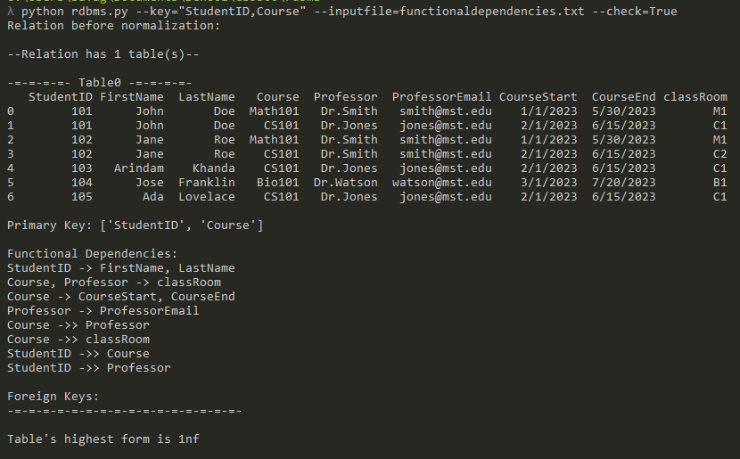

PYTHON APPLICATION
Relational Database Normalizer
A python application that allows a user to analyze the current normal form of a given table and then translate it into other normal forms.

Project Overview
This is a tool that takes in a relational table as a .csv file, a list of its functional dependencies, and a primary key. With that, it will determine which normal form the table already exists in, and can then normalize that table to whatever form the user desires, up to Boyce-Codd normal form.
Key Features
- Sleek, command-line interface that handles all inputs
- Translation into first, second, third, fourth, or Boyce-Codd Normal Form
- Formatted SQL code output ready to generate the new table
Technical Project Report
Read the full project report for a detailed explanation of the normalization process, implementation, and additional screenshots.
Interested in the code?
Explore the implementation on GitHub.